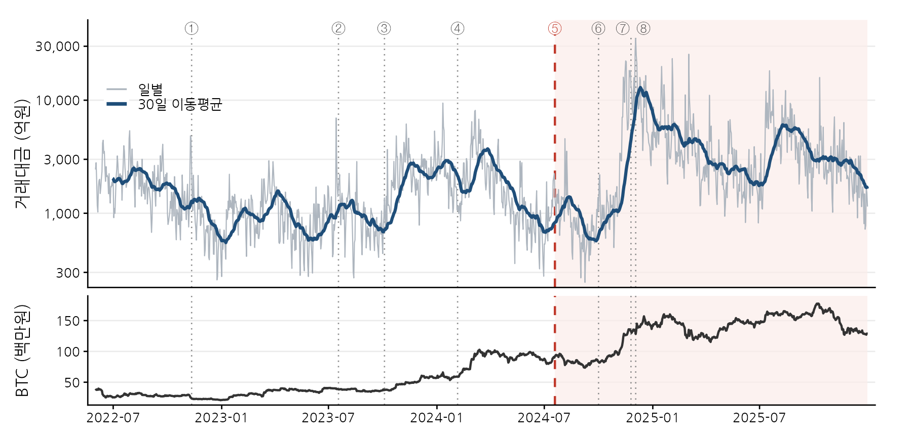
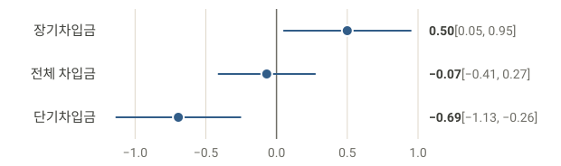
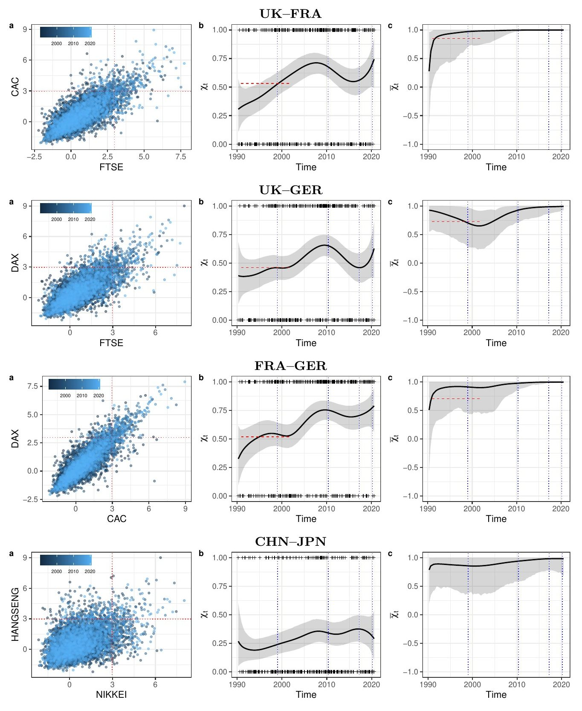
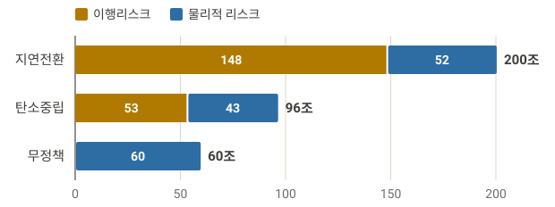
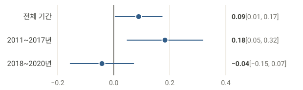

전체 논문과 발표 목록은 Curriculum Vitae에서 볼 수 있습니다.

가상자산이용자보호법 시행이 빗썸의 워시 트레이딩에 미친 영향: 벤포드 법칙·멱법칙·PELT로 본 실증 분석의 쉬운 해설
젖소 송아지 45마리의 설사 발생 전후 7일을 센서, 임상 점수, 영상 관찰로 비교한 연구의 쉬운 해설

국내 기업 7,036개 회사-연도 자료로 온실가스 배출량과 차입금의 관계가 배출권 계획기간과 만기에 따라 어떻게 달라졌는지 본 연구의 쉬운 해설

6개 주요 증시의 30년 자료로 극단적 손실의 동조화가 시간에 따라 어떻게 변했는지 추적한 베이즈 평활화 연구의 쉬운 해설

2050년까지 세 가지 기후 시나리오에서 국내 은행과 보험사의 기업여신 손실을 하향식과 상향식으로 함께 추정한 금융권 공동 기후 스트레스테스트의 쉬운 해설

국내 상장기업 2,350개 회사-연도 자료로 탄소배출 지표와 주가수익률의 관계, 업종 차이, 2018년 전후 변화를 분석한 연구의 쉬운 해설
175년의 전 세계 열대저기압 기록이 벤포드 법칙에 얼마나 잘 맞는지 시간에 따라 추적한 베이즈 평활화 연구의 쉬운 해설